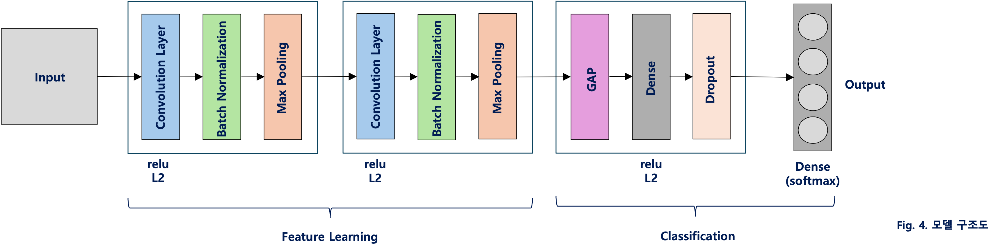
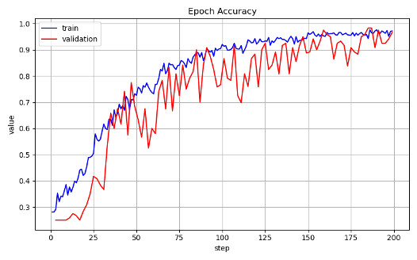
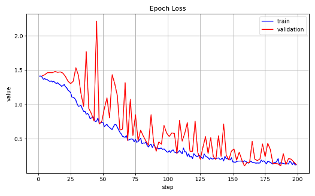
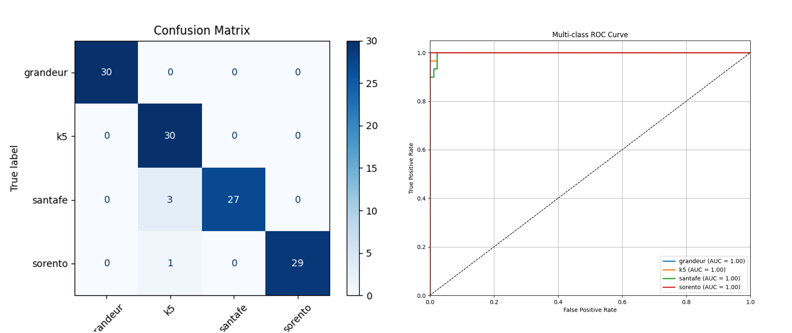
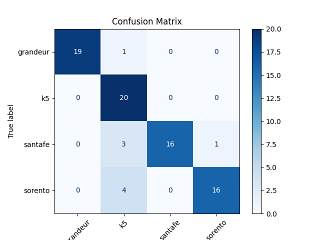

Deep Learning · Image Classification · 2025
CNN 기반 차종 분류 모델 — 전이학습 없는 경량 설계
약 800장의 소규모 데이터셋으로 국산 차종 4종을 분류하는 CNN 모델을 직접 설계하고 학습시켰다.
전이학습 없이 Conv-BN-Pool 2블록 구조와 강한 정규화 전략만으로 검증 정확도 96.7%를 달성했으며,
모든 클래스에서 AUC 1.00(검증 세트 기준)을 기록했다.
TensorFlow / Keras
Python
scikit-learn
OpenCV
matplotlib
96.7%
Validation Accuracy
클래스당 약 30장의 검증 데이터 기준. 훈련 정확도 97.2%와 0.5%p 이내 수렴.
1.00
Validation AUC (전 클래스)
4개 클래스 모두 AUC 1.00 달성. 테스트 세트에서 Santa Fe · Sorento는 0.99.
~800장
전체 학습 이미지 수
클래스당 190장 학습, ~20장 테스트. 전이학습 없이 달성한 결과.
과제 설정
딥러닝 수업 텀프로젝트로, 전이학습에 의존하지 않고 소규모 커스텀 데이터셋에서 높은 분류 성능을 달성할 수 있는 경량 CNN 구조를 직접 설계하는 것이 목표였다. 분류 대상은 외형이 유사한 국산 차종 4종이다.
분류 대상 클래스
| 클래스 | 차종 유형 | 주요 혼동 대상 |
|---|
grandeur | 준대형 세단 | — |
k5 | 중형 세단 | santafe, sorento (차체 비율 유사) |
santafe | 중형 SUV | k5, sorento |
sorento | 중형 SUV | k5, santafe |
핵심 난점: Santa Fe · Sorento · K5 세 모델은 차체 비율과 측면 실루엣이 유사하여, 소규모 데이터셋에서 시각적 변별력을 확보하기 어렵다. 클래스당 학습 이미지가 190장에 불과해 과적합 위험이 높다.
접근 전략: 전이학습 대신 L2 정규화·Dropout·BatchNorm·강한 증강의 조합으로 정규화를 극대화하고, GlobalAveragePooling으로 파라미터 수를 최소화하여 소규모 데이터에 최적화된 구조를 설계했다.
데이터 파이프라인
모든 스크립트는 src/ 디렉토리에서 실행. 경로는 ../ 기준으로 구성됨.
스크립트별 역할
1
image_preprocess.py — 원본 이미지를 300×200으로 비율 유지 리사이즈 후 zero-padding. multiprocessing.Pool로 CPU 전체 코어 병렬 처리.
2
shuffle_dataset.py — 클래스별 이미지를 무작위 셔플 후 {class}_{0000}.ext 형식으로 일괄 리네임.
3
split_dataset.py — 클래스당 190장을 train, 나머지를 test로 분리. seed=42 고정으로 재현 가능.
4
train.py — ImageDataGenerator로 실시간 증강, validation_split=0.15 적용. EarlyStopping / ReduceLROnPlateau / ModelCheckpoint 콜백 사용.
5
test.py — 분리된 test 세트에서 최종 평가. Classification Report · Confusion Matrix · ROC Curve 생성.
모델 아키텍처

Fig. 1 CNN 아키텍처 — Feature Learning(Conv-BN-Pool ×2) + Classification Head(GAP-Dense-Dropout-Softmax)
GAP 선택 이유: Flatten 레이어 대신 GlobalAveragePooling2D를 사용해 파라미터 수를 대폭 줄이고, 공간 위치 불변성을 높였다. 소규모 데이터셋에서의 과적합 억제에 효과적이다.
정규화 전략
| 기법 | 설정값 | 적용 목적 |
|---|
| L2 Regularization | 1e-4 — 모든 학습 레이어 | 가중치 크기 억제, 일반화 향상 |
| BatchNormalization | 각 Conv 블록 후 | 내부 공변량 이동 감소, 학습 안정화 |
| Dropout | 0.6 — Dense 레이어 후 | 소규모 데이터 과적합 방지 (높은 비율) |
| Class Weight | sklearn compute_class_weight('balanced') | 클래스 불균형 보정 |
데이터 증강 구성
ImageDataGenerator(
rescale = 1./255,
rotation_range = 30,
zoom_range = 0.3,
width_shift_range = 0.2,
height_shift_range = 0.2,
horizontal_flip = True,
brightness_range = (0.7, 1.3),
shear_range = 0.2,
validation_split = 0.15 # 별도 val 디렉토리 없이 내부 분할
)
별도의 검증 디렉토리 없이 validation_split=0.15로 학습 데이터에서 실시간 분할. 증강은 학습 세트에만 적용되고, 검증·테스트 세트는 rescale만 적용.
학습 설정 및 콜백
| 하이퍼파라미터 | 값 |
|---|
| Optimizer | Adam (lr=5e-4) |
| Loss | categorical_crossentropy |
| Batch size | 32 |
| Max epochs | 200 |
| 콜백 | 설정 |
|---|
| EarlyStopping | patience=30, val_acc 기준 |
| ReduceLROnPlateau | factor=0.5, patience=10 |
| ModelCheckpoint | best_model.keras 저장 |
| TensorBoard | 타임스탬프 서브디렉토리 |
EarlyStopping patience=30 설정 이유: 검증 정확도는 학습 중 큰 진폭으로 진동하는 경향이 있어, patience를 낮게 설정하면 실제 수렴 전에 조기 종료될 위험이 있다. 30 에폭의 유예를 두어 안정적인 수렴을 보장했다.
학습 곡선

Fig. 2 Epoch Accuracy

Fig. 3 Epoch Loss
| 구분 | 최종 Accuracy | 최종 Loss |
|---|
| Train | 0.9721 | 0.1247 |
| Validation | 0.9667 | 0.1287 |
두 곡선 모두 진동 없이 수렴하며, train/val 간 격차가 0.5%p 이내로 유지됐다. L2 + Dropout 조합이 소규모 데이터셋에서 효과적으로 작동함을 확인했다.
검증 세트 (Validation Set) 클래스별 성능
| Class | Precision | Recall | F1-score | AUC |
|---|
grandeur | 1.00 | 1.00 | 1.00 | 1.00 |
k5 | 0.88 | 1.00 | 0.94 | 1.00 |
santafe | 1.00 | 0.90 | 0.95 | 1.00 |
sorento | 1.00 | 0.97 | 0.98 | 1.00 |

Fig. 4 Validation Confusion Matrix · Multi-class ROC Curve (전 클래스 AUC = 1.00)
테스트 세트 (Test Set) 클래스별 성능
| Class | Precision | Recall | F1-score | AUC |
|---|
grandeur | 1.00 | 0.95 | 0.97 | 1.00 |
k5 | 0.71 | 1.00 | 0.83 | 1.00 |
santafe | 1.00 | 0.80 | 0.89 | 0.99 |
sorento | 0.94 | 0.80 | 0.86 | 0.99 |

Fig. 5 Test Confusion Matrix · Multi-class ROC Curve (Grandeur / K5 AUC = 1.00, Santa Fe / Sorento AUC = 0.99)
K5 Precision 0.71 — 주요 실패 케이스: Santa Fe · Sorento 샘플이 K5로 오분류되어 K5 precision이 하락했다. 세 모델은 국산 중형 차량으로 측면 실루엣이 유사하며, 클래스당 20장의 소규모 테스트 세트에서 이 경향이 두드러진다. 데이터 다양성 확보(다각도 이미지)가 가장 효과적인 개선 방향이다.
사용 기술
TensorFlow / Keras
모델 정의, 학습, 추론. ImageDataGenerator 기반 실시간 증강 및 validation_split 처리.
scikit-learn
클래스 가중치 계산, Classification Report, Confusion Matrix, ROC/AUC 산출.
OpenCV (cv2)
비율 유지 리사이즈 및 zero-padding 전처리. multiprocessing으로 병렬 처리.
matplotlib
Confusion Matrix, ROC Curve, Accuracy/Loss 곡선 시각화 및 저장.
pandas
TensorBoard CSV export 파일 파싱 후 학습 곡선 재플롯 (plot.py).
Python 표준 라이브러리
multiprocessing.Pool (병렬 전처리), random (셔플/분할 seed 고정), os / shutil (파일 관리).
개발 환경
| 항목 | 버전 / 설정 |
|---|
| Python | 3.8+ |
| TensorFlow / Keras | 2.12+ |
| 모델 저장 포맷 | .keras (best_model.keras, saved_model_tf.keras) |
| 학습 로그 | TensorBoard (logs/ 타임스탬프 서브디렉토리) |
| 재현성 | seed=42 고정 (데이터 분할 및 학습) |